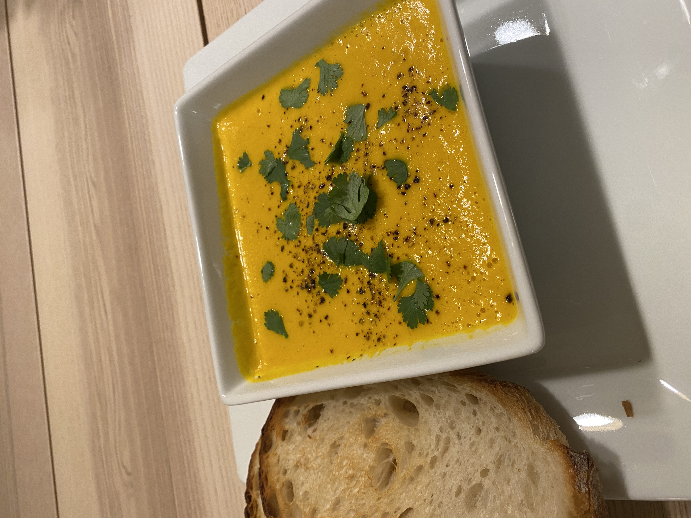

Carrot Ginger Soup

Description
A hearty soup made with only carrots, onions, ginger and some spices! A lot of ingredients that most people have sitting in their fridge right now. It is a low hassle meal and can feed a lot of people. A good blender is necessary!
Ingredients
- 3 tablespoons butter
- 1/3 medium onion, roughly chopped
- 3/4 pound carrots, peeled and cut into 1/2-inch coins
- 1 teaspoon peeled, grated fresh ginger
- 1/2 teaspoon ground cumin, to taste
- 1/2 teaspoon tumeric, to taste
- 1/2 teaspoon coriander, to taste
- Pinch cayenne pepper
- 2 cups chicken or vegetable stock
- 1 cup unsweetened coconut milk
- Juice from 1/2 lime
- Salt and freshly ground pepper
- Cilantro, if you have it
Preperation
- Heat the butter until the foam subsides. Add the diced chopped onions, sprinkle with salt, stir to coat with butter. Add the chopped carrots along with the spices. Stir and cook until softened, about 10 minutes.
- Add the stock; there should be enough to cover the vegetables. Bring the pot to a boil over high heat. Reduce the heat to medium and continue cooking until the carrots are cooked through, about 10 to 15 minutes.
- If you have an immersion blender, purée the soup in the pot. If not, wait until the soup cools slightly, and purée in a food processor. Add enough coconut milk (and a little more stock or water if necessary) to bring the soup to the consistency you want. Adjust the seasoning (depending on the stock you use, you may need more or less salt), and lime juice to taste. Garnish and serve.
Private Notes
I buy baby/mini carrots that are already pulled and peeled. That way you don't have to cut them up. Just add some cook time to steps 1 and 2!